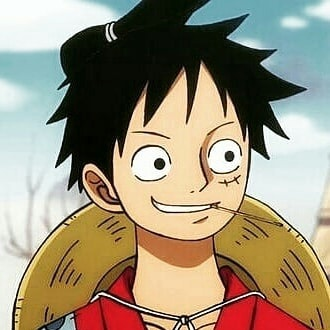
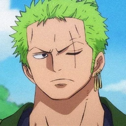
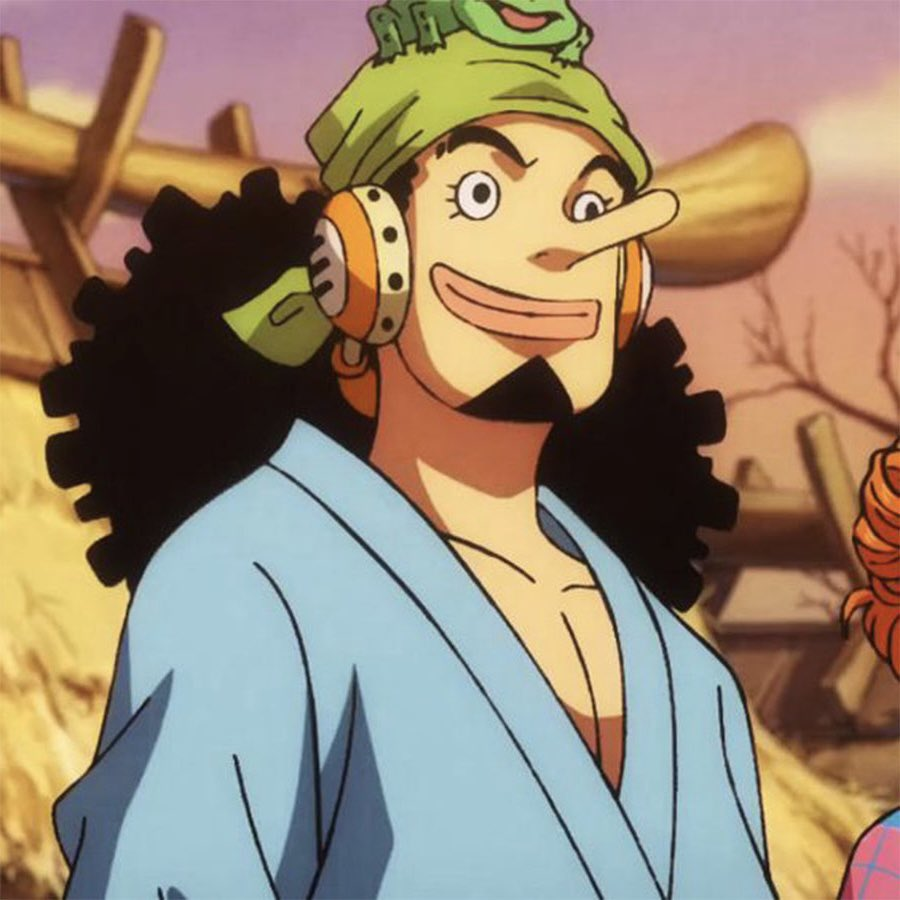
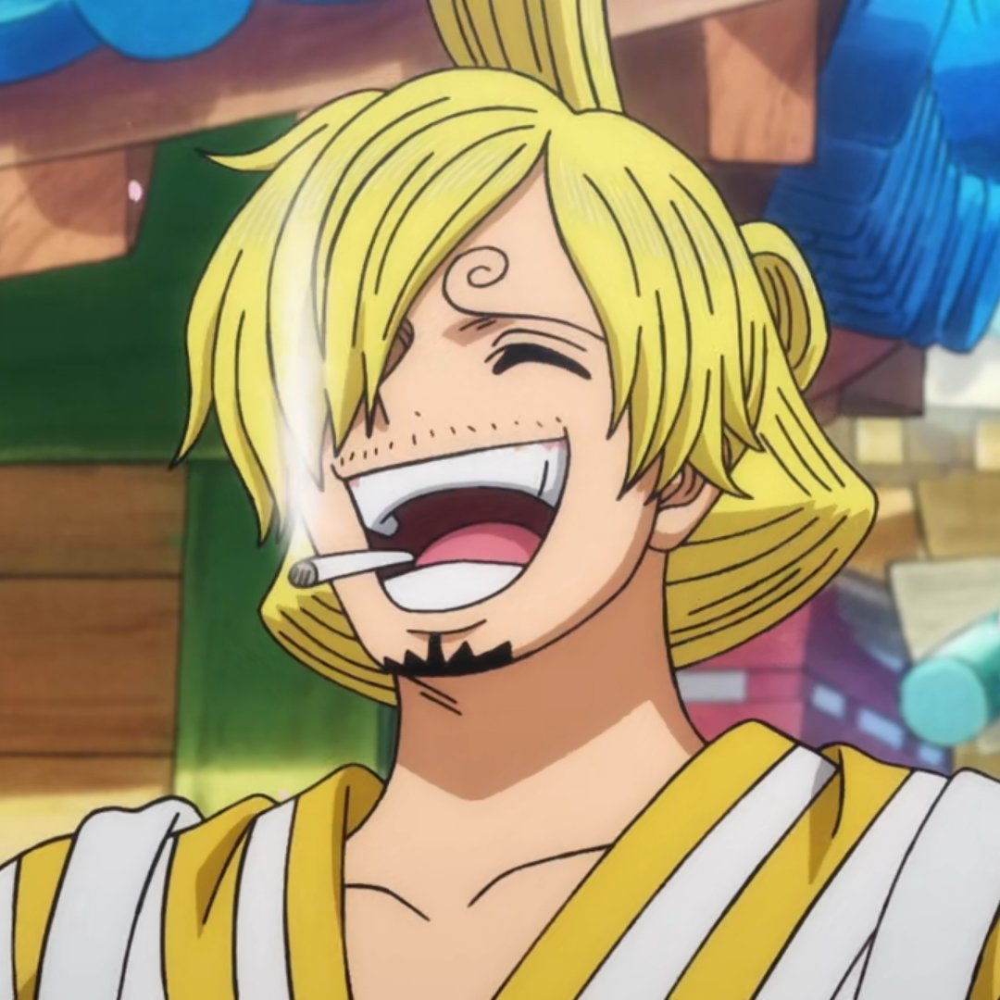
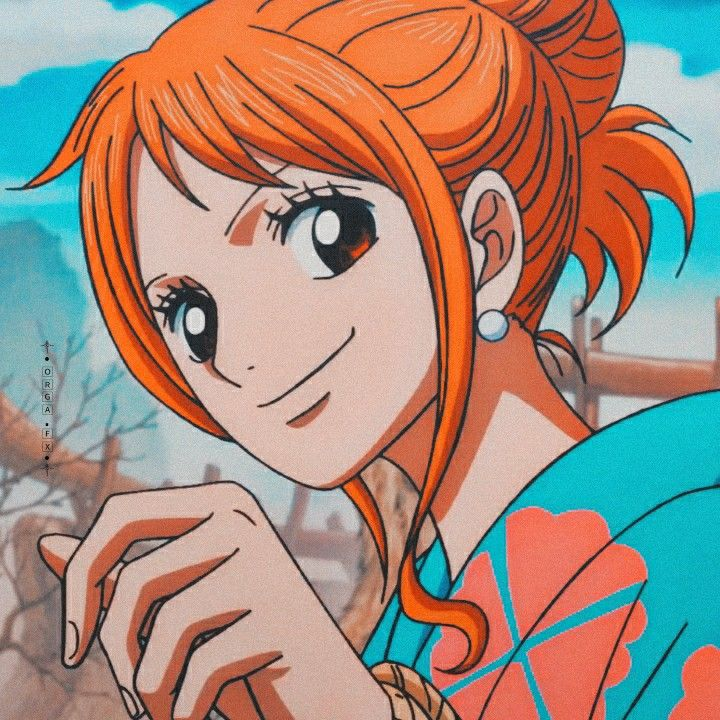
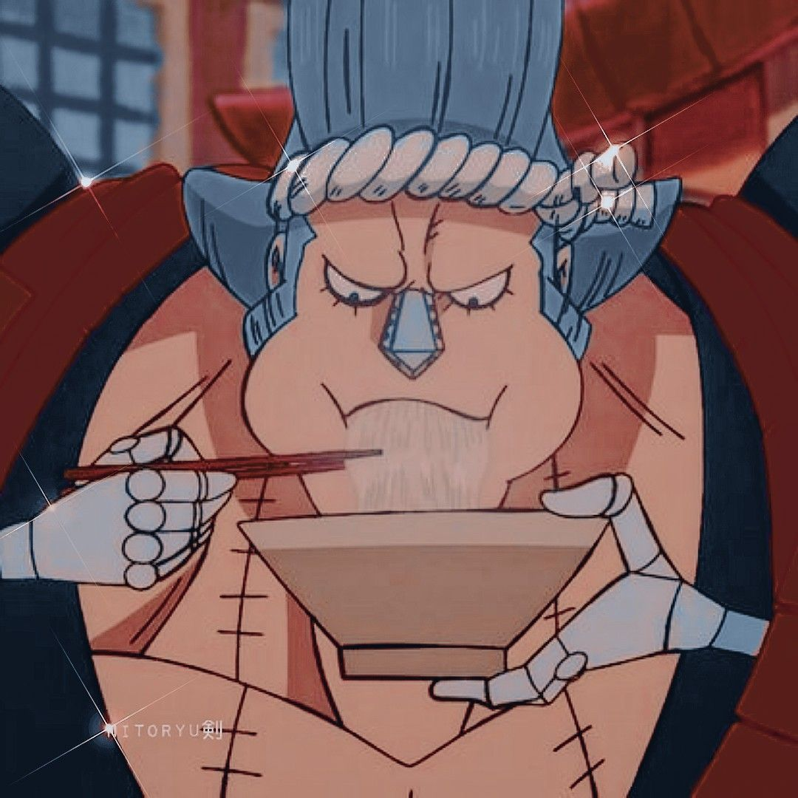
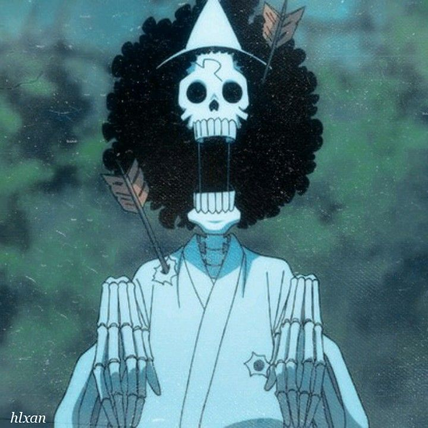
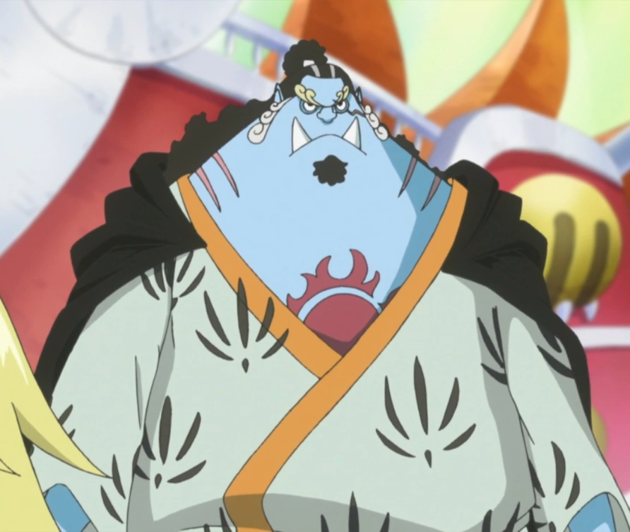

-
Monkey D. Luffy
Descrição
Monkey D. Luffy é o protagonista do famoso anime e mangá "One Piece". Ele é conhecido por sua personalidade extrovertida, ingênua e corajosa. Luffy é um pirata com o sonho de encontrar o lendário tesouro conhecido como "One Piece" e se tornar o Rei dos Piratas. Ele possui habilidades únicas após comer a Fruta do Diabo Gomu Gomu, que lhe concedeu o poder de esticar seu corpo como borracha. Apesar de sua natureza brincalhona, Luffy é extremamente leal aos seus amigos e está disposto a arriscar sua vida para protegê-los e alcançar seus objetivos. Sua determinação, força física e capacidade de liderança o tornam uma figura inspiradora para muitos dentro e fora do universo de "One Piece"..
-
Roronoa Zoro
Descrição
Roronoa Zoro é um dos personagens principais do mangá e anime "One Piece". Ele é o espadachim do bando dos Chapéu de Palha, liderado por Monkey D. Luffy. Zoro é conhecido por sua incrível habilidade com a espada, utilizando o estilo de luta de três espadas, e sua busca incessante para se tornar o maior espadachim do mundo. Ele é um personagem sério, dedicado e extremamente leal aos seus amigos, especialmente a Luffy. Ao longo da história, ele enfrenta diversos desafios e inimigos poderosos, sempre demonstrando uma determinação inabalável em suas metas.
Ussop
Descrição
Ussop é um personagem do mangá e anime "One Piece". Ele é um membro dos Chapéu de Palha, o bando liderado por Monkey D. Luffy. Ussop é conhecido por suas habilidades como atirador, usando uma variedade de armas e engenhocas criativas em batalha. Inicialmente, ele é retratado como um mentiroso compulsivo e covarde, mas ao longo da história, ele amadurece e se torna mais corajoso, especialmente quando defende seus amigos. Apesar de sua personalidade exagerada e propensão para contar histórias fantasiosas, Ussop é um membro valoroso da tripulação, contribuindo com sua inteligência e engenhosidade em várias situações.
Sanji
Descrição
Sanji é um dos personagens principais do mangá e anime "One Piece". Ele é o cozinheiro do bando dos Chapéu de Palha, liderado por Monkey D. Luffy. Sanji é conhecido por sua incrível habilidade na culinária, bem como suas técnicas de combate baseadas em chutes, que ele desenvolveu ao treinar com o famoso Zeff, o cozinheiro pirata. Ele é extremamente dedicado aos seus princípios, como sua regra de nunca atacar uma mulher, independentemente da situação. Sanji é também um grande apreciador da beleza feminina e tem uma personalidade charmosa e cavalheiresca, embora às vezes entre em conflito com sua tripulação de piratas. Ao longo da série, Sanji enfrenta vários desafios e inimigos poderosos, sempre demonstrando uma grande determinação e lealdade aos seus amigos.
Nami
Descrição
Nami é uma personagem principal do mangá e anime "One Piece". Ela é a navegadora do bando dos Chapéu de Palha, liderado por Monkey D. Luffy. Nami é uma navegadora incrivelmente habilidosa, capaz de traçar rotas complexas e lidar com qualquer situação no mar. Antes de se juntar aos Chapéu de Palha, Nami tinha uma vida complicada como uma ladra e cartógrafa, mas sua ambição principal é mapear todo o mundo. Ela é conhecida por sua inteligência, astúcia e habilidade em manipular os homens para conseguir o que quer. Apesar de sua natureza inicialmente egoísta, Nami desenvolve um forte senso de lealdade e proteção em relação à sua tripulação ao longo da série, tornando-se uma figura indispensável para o grupo.
Tony Tony Chopper

Descrição
Tony Tony Chopper é um dos personagens principais do mangá e anime "One Piece". Ele é o médico do bando dos Chapéu de Palha, liderado por Monkey D. Luffy. Chopper é uma rena que ganhou habilidades humanas após comer a Hito Hito no Mi (Fruta Humana), tornando-se um homem rena. Ele possui a capacidade de transformar-se em várias formas, incluindo uma forma feroz chamada "Monster Point".
Nico Robin

Descrição
Nico Robin é uma personagem importante do mangá e anime "One Piece". Inicialmente, Robin era uma figura misteriosa e solitária, devido à sua trágica história de ser perseguida por seu conhecimento sobre os Poneglyphs, inscrições antigas que revelam segredos sobre o mundo de "One Piece". No entanto, ao se juntar aos Chapéu de Palha, ela encontra uma nova família e um lugar onde pode pertencer. Robin é conhecida por sua inteligência, perspicácia e conhecimento profundo sobre a história do mundo. Ela é extremamente leal aos seus amigos e está disposta a arriscar sua vida para protegê-los. Ao longo da série, Robin desenvolve relacionamentos significativos com os outros membros da tripulação, especialmente com Luffy e Nami, e desempenha um papel vital na busca deles pelos Poneglyphs e pela verdade sobre o século perdido.
Franky
Descrição
Franky é um personagem do anime e mangá One Piece. Ele é um engenheiro naval e um cyborg com um coração de ouro. Inicialmente apresentado como um antagonista, ele se junta aos Chapéus de Palha e se torna um membro valioso da tripulação. Franky é conhecido por sua personalidade excêntrica, sua paixão por construir e modificar navios, além de sua força física impressionante. Ele é o responsável pela construção e manutenção do Thousand Sunny, o navio dos Chapéus de Palha, e é um dos pilares da equipe quando se trata de combate e estratégia. Sua história de fundo revela uma jornada de autodescoberta e redenção, e ele é um dos personagens mais queridos e icônicos de One Piece.
Brook
Descrição
Brook é um personagem fictício do anime e mangá "One Piece". Ele é um esqueleto vivo e é o músico da tripulação dos Chapéus de Palha, liderada pelo protagonista Monkey D. Luffy. Brook foi originalmente um humano, mas após comer a Fruta da Ressurreição, ele retornou à vida após a morte de seu corpo. Ele possui habilidades únicas, como tocar violino com maestria e usar técnicas de esgrima com sua espada chamada "Soul Solid". Brook é conhecido por seu senso de humor peculiar, seu amor pela música e sua lealdade aos seus companheiros de tripulação.
Jinbei
Descrição
Jinbei é um personagem do famoso anime e mangá "One Piece". Ele é um dos mais fortes e respeitados pescadores e guerreiros do mar do mundo de One Piece. Inicialmente introduzido como um inimigo, Jinbei eventualmente se torna um aliado valioso e um membro importante da tripulação dos Chapéus de Palha, liderada por Monkey D. Luffy. Jinbei é um mestre no estilo de luta "Fish-Man Karate" e é conhecido por sua calma, sabedoria e lealdade aos seus amigos. Sua personalidade compassiva e sua habilidade de resolver conflitos fazem dele um membro valioso da tripulação de Luffy. Além disso, Jinbei também possui uma conexão profunda com o mar, sendo um "homem-peixe" e ex-capitão dos Piratas do Sol.